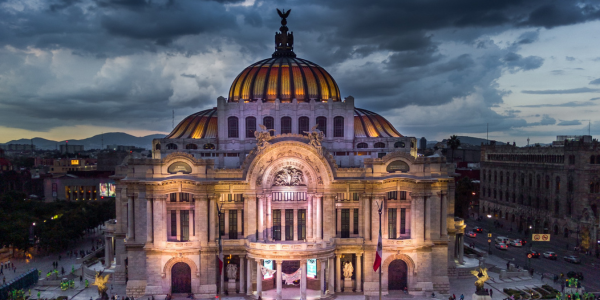
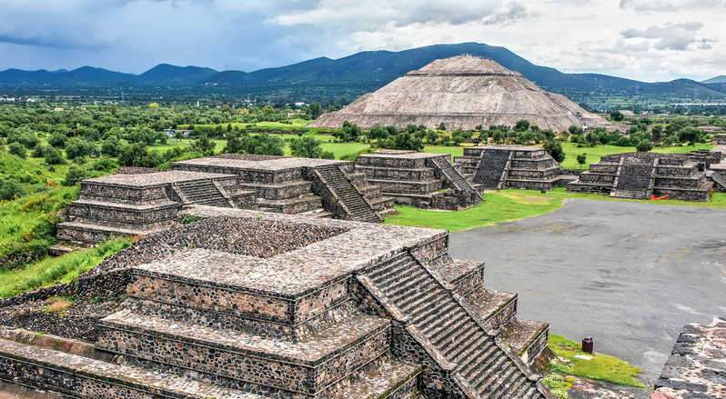
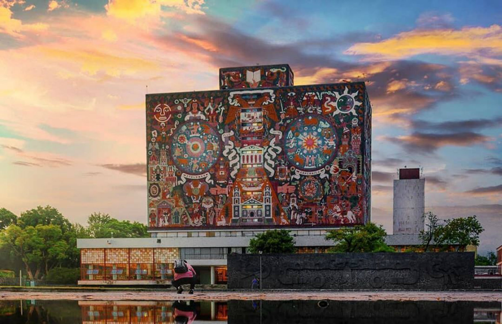

La CDMX se caracteriza como un importante centro turístico a nivel mundial, principalmente por su rico legado histórico, cultural y gastronómico, que se refleja en su arquitectura, museos, monumentos y variada oferta culinaria. Además, cuenta con una gran infraestructura turística y de negocios, que la convierte en un destino atractivo tanto para viajeros como para inversores.

Palacio de Bellas Artes y su estilo único
Principal recinto artístico y cultural del país. Es un ícono de la Ciudad de México y un lugar emblemático para la cultura mexicana.
Un recorrido por la historia, un recorrido por Teotihuacán
La ciudad de Teotihuacán, además de representar el vestigio arqueológico más importante del centro del país, es considerada una maravilla arqueológica del mundo.


Ciudad Universitaria (UNAM)
Reconocido por la UNESCO como Patrimonio Cultural de la Humanidad. Es un modelo de arquitectura y urbanismo moderno, con edificios emblemáticos y murales de artistas reconocidos. Ven y conoce sus museos.
México: donde la historia se encuentra con la pasión y la cultura se vive en cada rincón
Aquí te dejamos más opciones que puedes visitar en la Ciudad de México